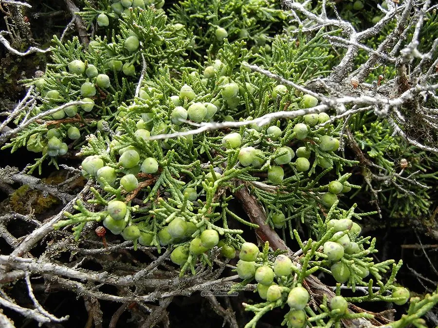

乔木 · 植物界
圆柏 Juniperus chinensis

中国原产的常绿针叶乔木，树冠塔形或圆锥形，幼树叶片刺状、老树鳞状，耐修剪，是园林与盆景的常用树种。
- 分类
- 门裸子植物门纲松柏纲目松柏目科柏科属刺柏属
- 栖息环境
- 海拔 1500 米以下的山坡、丘陵与庭院，喜光耐寒耐旱
- 地理分布
- 中国南北各地广泛分布与栽培，朝鲜半岛、日本也有分布
- 保护级别
- 暂无评估；中国未列入国家重点保护野生植物名录
物种志
圆柏为常绿针叶乔木，高可达 20 m，树皮灰褐色、呈条片状纵裂；树冠幼时尖塔形，老时广圆形。叶二型：幼树多为刺状叶，三叶轮生、先端尖锐；成年树多为鳞状叶，交互对生、紧贴小枝。雌雄异株，雄球花黄色、生于枝顶，雌球花绿色；球果近球形，被白粉，成熟时暗褐色，内含 2–4 粒种子。
圆柏原产中国、朝鲜半岛及日本，中国南北各地广泛栽培，喜光、耐寒、耐旱，对土壤要求不严，耐修剪，寿命长。它是北方园林中常见的常绿树种，常被修剪成球形、塔形或绿篱，也是制作盆景的优良材料；木材芳香、耐腐，可供建筑、雕刻与制笔杆用；枝叶与种子可入药。圆柏与侧柏同属柏科，但圆柏的叶片有刺状与鳞状两种，而侧柏全为鳞状叶。
形态与习性
- 株高可达 20 m，树冠塔形或广圆形
- 叶片幼树刺状，成年树鳞状，二型叶
- 花期3–4 月，雄球花黄色
- 球果成熟翌年 10–11 月，被白粉
- 光照喜光，不耐长期荫蔽
- 水分耐旱，怕积水
- 主要用途园林绿化与造型、盆景、木材制笔杆、枝叶入药
趣味知识
- 圆柏的叶片有刺状和鳞状两种，幼树多刺叶，成年树多鳞叶。
- 圆柏耐修剪、寿命长，是北方园林中常见的常绿绿篱与造型树。
- 圆柏球果外面有一层白粉，成熟时呈暗褐色，内含 2–4 粒种子。
- 圆柏木材芳香耐腐，古代常用它制作笔杆与雕刻工艺品。